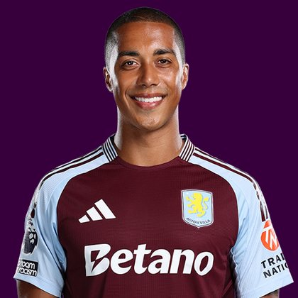

PITCHKEEP
Premier League ranks
Player File · MID MUN · Premier #45

Youri Tielemans
MID · Man Utd · age 29 · £6.0m
2025/26 Premier League
| Year | Starts | Min | G | A | xG | xA | CS | GC | Bonus | YC | Sleeper | FPL |
|---|---|---|---|---|---|---|---|---|---|---|---|---|
| 2025/26 | 21 | 1857 | 0 | 4 | 1.14 | 3.26 | 4 | 27 | 3 | 0 | 106.4 | 68 |
Plus
- Premier #45. Inside the first 50 of the 400-deep hybrid.
- 106.4 Sleeper BPL 2025 points (Pitch #123).
- Penalty order #3.
- Consensus 44.6 vs Sleeper #123 - the industry still believes more than 2025/26 counted.
Minus
- Board spread 19-197 (RotoWire GW1 to FPL 2025/26 Points).
PitchKeep Take · The Premier
Youri Tielemans is a midfielder for Man Utd, age 29, £6.0m. The Premier ranks him 45th overall by splitting Sleeper BPL 2025 (#123, 106.4 points) with the consensus of 5 other boards (44.6). The industry still has him 78 spots ahead of the 2025/26 Sleeper count. The Premier pays that reputation something, not everything. Brand does not outrun a down year, and a down year does not erase a player Man Utd still builds around.
The 2025/26 Premier League line is 21 starts and 1857 minutes, 0 goals and 4 assists, 58 tackles and 51 CBI. Official FPL scored it at 68 points (2.7 per match) with 3 bonus. Sleeper's table turned the same counting stats into 106.4. Midfielders get 9 a goal, 6 an assist, and 1 a clean sheet, plus a full tackle/CBI stream. That is why a six who plays every week can outrank a ten-goal winger who sits.
Underlying: 1.14 xG, 3.26 xA, 4.4 xGI. Set pieces: penalty order #3 for Man Utd. Role at Man Utd is the 2026/27 question sitting under the 2025/26 number. 21 starts is a starter. Anything under 25 starts is a rotation warning we already priced. Minutes are the skill that survives a finishing regression. The friendliest board is RotoWire GW1 at 19; the coldest is FPL 2025/26 Points at 197.
Market: £6.0m, 12 boards on the file. That is leftover money for a Premier-ranked name. If the minutes hold, this board already voted. FPL's own EP-next is 2.1. ICT 113.1.
Instruction: he is a starter in deep Sleeper and a squad/rotation piece in 10-team FPL. Pay Premier #45 money, not a leftover 2024 reputation, not waiver dust. Nearby on The Premier: Jurriën Timber, Jarrad Branthwaite, Malick Thiaw. Versus The Pitch (Sleeper-only #123), the hybrid moves him up to #45. That move is the third list doing its job.
He is 29, which on this board is neither a dart nor a warning label. Prime-age midfielders get ranked on what they just did and whether Man Utd still gives them the ball. 1857 minutes says yes. The 2026/27 FPL price (£6.0m) is the app's guess at whether that continues. The Premier is the blend of that guess and the box score.
How to use the file: The Pitch is the Sleeper-only 400 (he is #123 there). The Premier is the 50/50 with every other board we track. Attack, Midfield, Defence, and Keepers re-rank the same Sleeper table by position. BK Value on this page follows The Premier when you are on the hybrid calculator and The Pitch when you are on the Sleeper calculator. Same curve either way - 12,000 at 1.01. Unranked sources are skipped, never treated as 999, which is why a player missing from Yahoo's XI is not secretly ranked 400th.
Sleeper vs FPL
Same 2025/26 line, two scoring tables
Board graph
Spread 19-197 · 12 sources
Tape · 2025/26 Premier League
Youri Tielemans 2026 - Full Season Show - Best Skills, Goals & Assists | HD
Every Board
Spread 19-197 · 12 sources
| Source | Rank |
|---|---|
| RotoWire GW1 | 19 |
| ESPN PL 50 | 31 |
| RotoWire Fantrax / Sleeper 400 | 38 |
| The Athletic PL 50 | 46 |
| RotoWire FPL 400 | 89 |
| FPL Price Board | 91 |
| FPL ICT Index | 102 |
| FPL xGI | 117 |
| FPL Ownership | 119 |
| Sleeper BPL 2025 | 123 |
| FPL EP Next | 144 |
| FPL 2025/26 Points | 197 |
PK News
- Every Premier League transfer this summer as window deadline passes and Guehi to Liverpool suffers late collapse
- Emi Martinez transfer news: Chelsea complete signing of Argentina international goalkeeper from Aston Villa
- Fabrizio Romano Transfer News: Mac Allister to Man Utd, Nwaneri latest, Liverpool ‘positive’ over Alonso
- Fabrizio Romano teases next Manchester United signing after £83m double swoop complete
All players · The Premier · The Pitch · PK News · Calculator